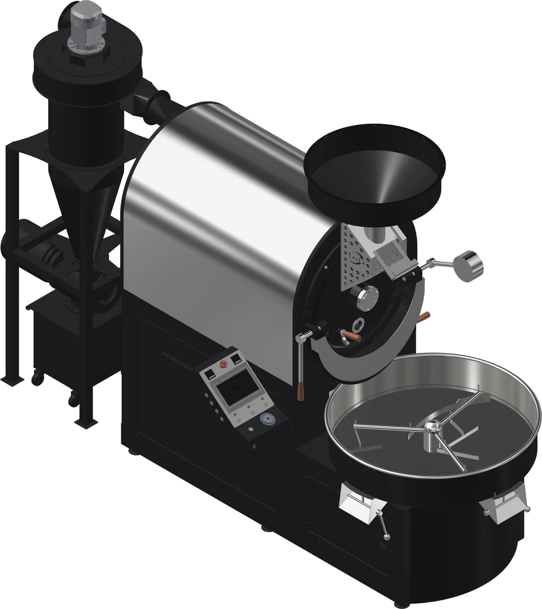

OTL-30
Industrial output, fully automated.
- Batch
- 10–30 kg
- Output
- 40–120 kg/h
Industrial roasting system
Full circulation. Up to 30% less energy.
Simplified schematic of the full-circulation airflow. Photography of the OTL-60 is being updated.
The OTL-60 uses an advanced full-circulation airflow system for efficiency, precision and environmental responsibility, engineered for large-scale production facilities.
01
A closed loop that recycles exhaust air and minimises energy waste.
02
Seven critical temperatures monitored for precise adjustment.
03
Clean emissions built into the system.
04
Real-time data and programmable profiles for consistent batches.
Seven critical temperatures are monitored so you can adjust the roast profile precisely, while the closed loop recycles exhaust air and the integrated afterburner cleans what leaves the system.

Industrial output, fully automated.
The full-circulation flagship.

High volume, held steady.
Send us your requirements and we will prepare a quote, delivery time and installation plan.